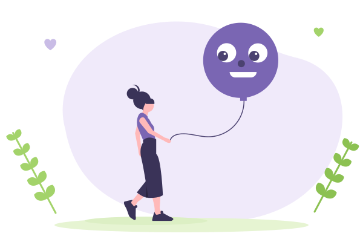
Эмоциональная грамотность
Разбираемся в собственных чувствах, учимся понимать эмоции окружающих и находить конструктивные способы справляться с тревогой, гневом и обидой.
ПодробнееЕсли ребёнку сложно справляться с тревогой, неуверенностью или конфликтами, важно вовремя оказать поддержку — чтобы он не замыкался в себе.
Индивидуальные занятия и групповые тренинги для детей и подростков
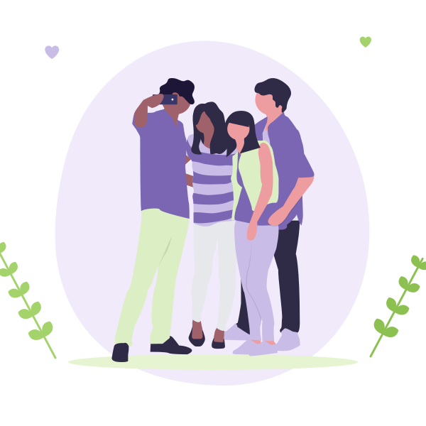
Страх темноты и высоты, переживания из-за разлуки с близкими, тревога перед школой, беспокойные мысли и внутреннее напряжение.
Резкие эмоциональные реакции, вспышки раздражения, частые слёзы, агрессивное поведение, замкнутость и сложности с выражением чувств.
Потеря интереса к занятиям, трудности с концентрацией внимания, волнение перед контрольными и экзаменами, эмоциональная усталость от школы.
Сложности в установлении дружеских контактов, конфликты с одноклассниками, переживания из-за одиночества, буллинг и непонимание со стороны сверстников.
Сомнения в собственных силах, поиск личной идентичности, переживания из-за внешности, эмоциональная нестабильность и сложности с принятием себя.
Развивающие программы в группе или индивидуально.

Разбираемся в собственных чувствах, учимся понимать эмоции окружающих и находить конструктивные способы справляться с тревогой, гневом и обидой.
Подробнее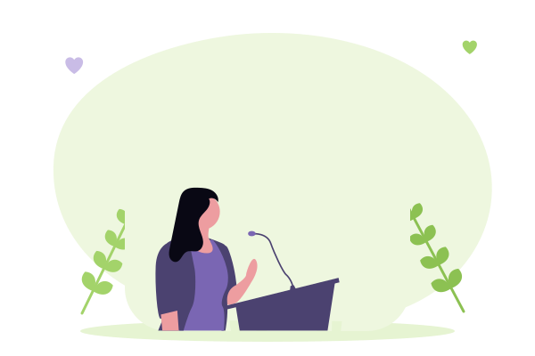
Осваиваем навыки самопрезентации, учимся спокойно отвечать перед классом, выступать перед аудиторией и доносить свои мысли понятно и убедительно.
Подробнее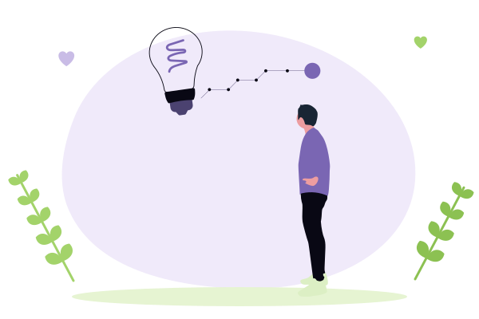
Помогаем ребёнку увидеть свои сильные стороны, определить интересы и научиться использовать собственные ресурсы в учёбе и повседневной жизни.
Подробнее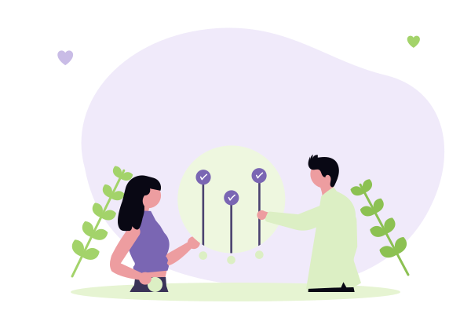
Развиваем инициативность, ответственность и умение сотрудничать, находить компромиссы и вместе с другими двигаться к результату.
ПодробнееТренируем умение знакомиться, начинать и поддерживать диалог, выстраивать дружеские отношения, отстаивать личные границы и разрешать разногласия.
Подробнее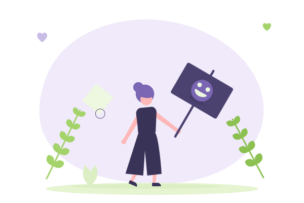
Учимся замечать собственные достижения, принимать свои особенности и сохранять уверенность в себе, даже когда мнения окружающих не совпадают с нашими.
ПодробнееВстреча, на которой ребёнок может выразить свои переживания через игру, творчество и беседу. Вместе исследуем возникшие трудности и подбираем подходящие способы справляться с ними. Родители подключаются к обсуждению в начале и в завершение встречи.
Пространство для открытого разговора без осуждения и обесценивания. Обсуждаем то, что волнует подростка: тревожность, отношения с близкими и сверстниками, уверенность в себе, личные границы и поиск собственного пути.
Психологические тренинги в небольшой группе ровесников. Через игры, практические задания и совместное обсуждение участники развивают навыки общения, учатся понимать себя и других, взаимодействовать и увереннее чувствовать себя в коллективе.
Занятия проходят в поддерживающей обстановке, где каждый может проявить себя и попробовать новые модели поведения.
Персональная программа с учётом потребностей и интересов ребёнка или подростка. Выбираем приоритетное направление — например, развитие коммуникативных навыков, подготовку к выступлениям или работу над самооценкой — и постепенно осваиваем новые умения в комфортном темпе.
Все форматы доступны очно и онлайн.
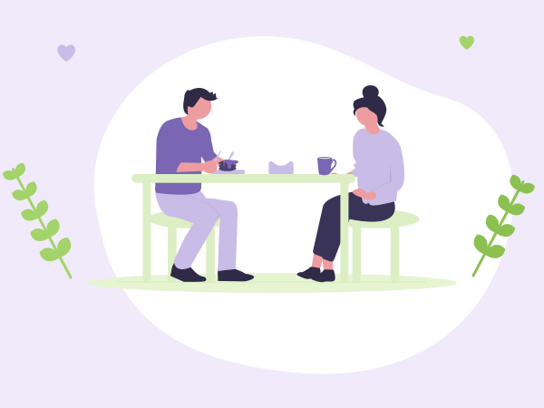
«Родители меня не понимают»
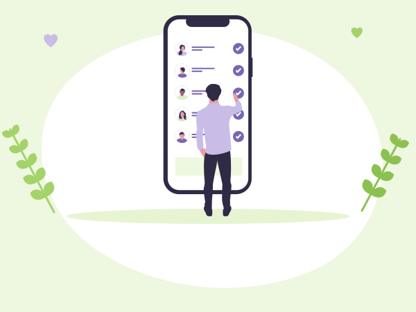
«Не могу без гаджетов»
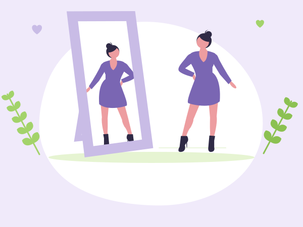
«Моё тело непропорционально, я себе не нравлюсь»
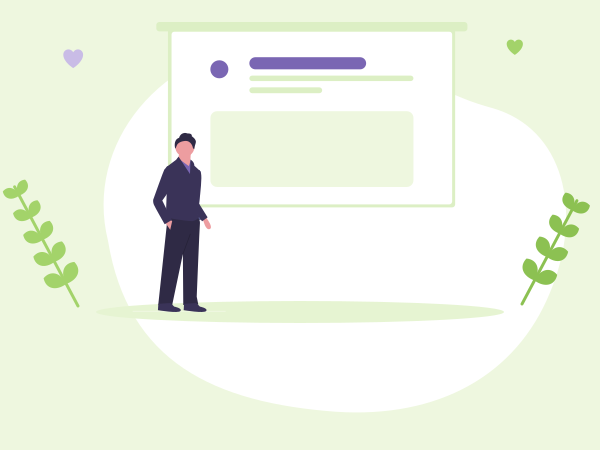
«Страшно отвечать у доски»
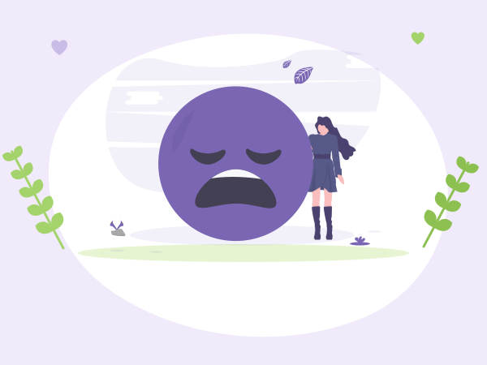
«То ничего не хочется, то всё бесит»
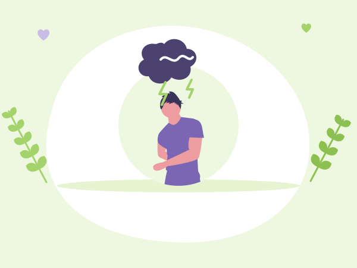
«Часто раздражаюсь и срываюсь на близких»
Это нормальные переживания взросления. Но справляться с ними в одиночку тяжело, и здесь может помочь психолог.
Сегодня подросткам легко поддерживать контакт в интернете, но живое общение по-прежнему может вызывать затруднения. Как познакомиться с новыми людьми? Как выразить своё мнение? Что делать, если возник конфликт или страшно выступать перед другими?
На групповых тренингах подростки учатся взаимодействовать со сверстниками на практике: выполняют задания, обсуждают разные точки зрения, пробуют себя в выступлениях и осваивают навыки командной работы.
Это не урок и не экзамен. Здесь не сравнивают участников и не ставят отметок. Главное — создать условия, в которых можно проявлять инициативу, учиться на собственном опыте и постепенно становиться увереннее.
Записаться в группу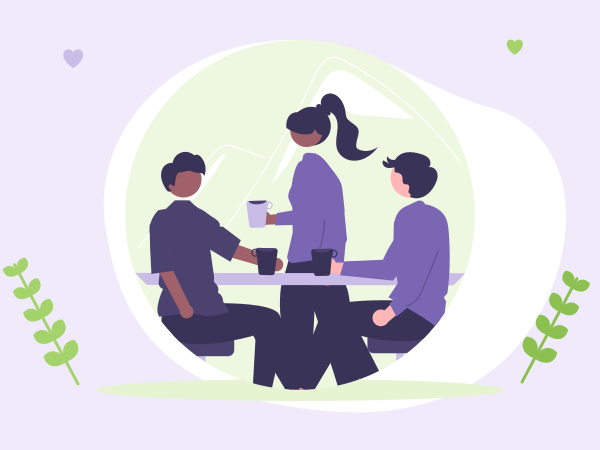
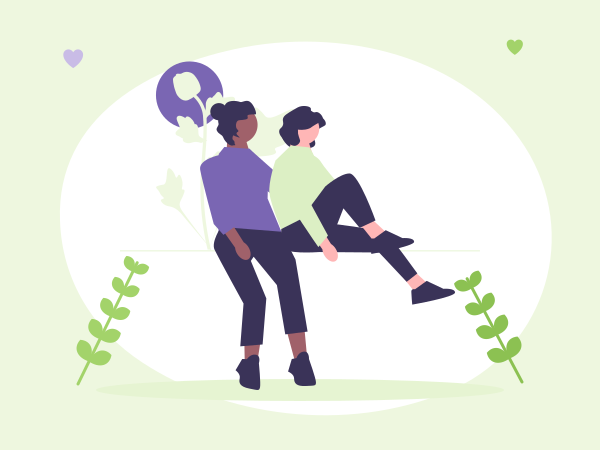

Я психолог, работаю с детьми, подростками и их родителями. Провожу индивидуальные консультации и групповые тренинги, направленные на эмоциональное благополучие и развитие важных жизненных навыков.
В своей работе я стараюсь смотреть глубже внешнего поведения. За раздражительностью, слезами, отказом разговаривать или нежеланием что-либо делать могут скрываться чувства и переживания, с которыми ребёнку пока трудно справиться самостоятельно.
Моя задача — помочь ребёнку разобраться в своих эмоциях, найти подходящие способы выражать их и постепенно научиться справляться с возникающими трудностями.
Я создаю пространство, в котором можно говорить о сложном, задавать вопросы, пробовать новое и не бояться осуждения.
Родители — важные участники этого процесса. Вместе мы стараемся лучше понять потребности ребёнка, увидеть причины происходящего и найти решения, которые подойдут именно вашей семье.
Напишите мне в Telegram: коротко расскажите о ситуации и возрасте ребёнка. Я отвечу, помогу разобраться и предложу подходящий формат.
Написать @Olesya_PorterЗдесь будет отзыв клиента.
Здесь будет отзыв клиента.
Здесь будет отзыв клиента.